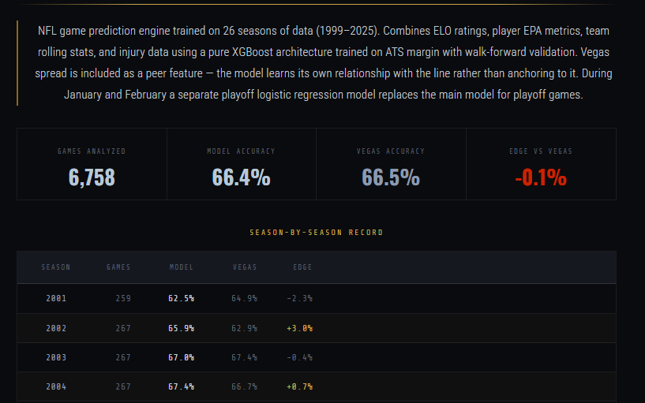
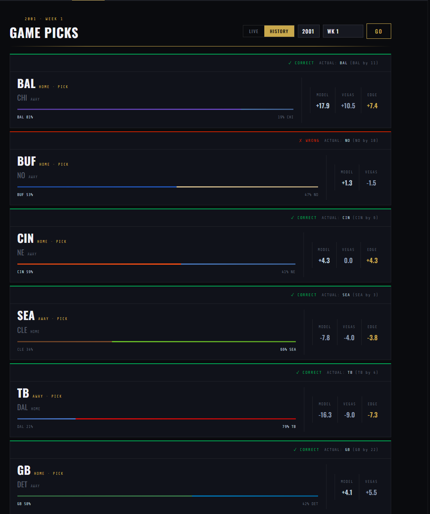
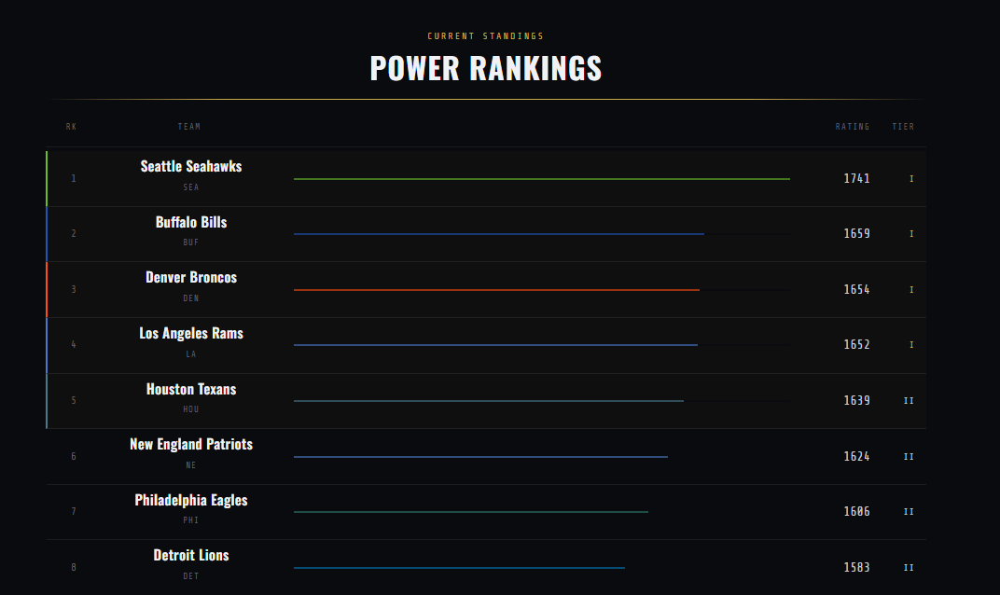

NFL prediction tool
An NFL spread and player-prop prediction engine trained on 26 seasons of data. It doesn't try to beat Vegas on every game, it flags the specific games where it disagrees with the line by a meaningful margin, and only those get bet. I have yet to come up with a good name for it.

Across every game since 1999, raw model accuracy sits almost dead even with Vegas a -0.1% edge. I have tried to beat out Vegas on raw accuracy but I couldn't get past a + 0.1% edge so I switched strategy. It's built to find the specific games where it disagrees with the sportsbook's line, which is where the real edge shows up. It still makes predictions for every game and it also has props for the QB, RB, and WR

Every game gets a line that the model predicts and a line from sportsbooks. I used the NFL-Readpy library for data on historical games and that library contains the lines for every game since 1999. Live games scrape data from ESPN and get the moneylines from The Odds API. If the model and vegas moneylines show a big enough disagreement that game gets flagged

A standalone ELO power-rankings system, calculated by simulating every season since 1999 game by game rather than pulling from an outside source. Ratings carry over year to year with regression toward the mean. A team's elo takes into account their historical and present day performances

The live view before hitting refresh, as of writing the 2026-2027 NFL season has not started so the live view is not populated. During the season, one click runs the full weekly pipeline: pulling new schedules, stats, and injury reports, retraining, and generating fresh picks for the upcoming week.
The model is a pure XGBoost model trained directly on ATS margin (actual result minus Vegas spread), with the Vegas line included as a peer feature rather than a stacking anchor, so it learns its own relationship to the market instead of just correcting it. A separate logistic regression model swaps in for playoff games in January and February, weighted toward Conference Championship and Super Bowl accuracy.
The most important finding wasn't a bigger model — it was an asymmetric edge filter. Underdog bets are profitable across every edge size, but favorite bets only turn a profit when the model's edge is small. Applying that filter alone added over $2,000 in ROI versus betting every flagged game unfiltered, and the full backtest nets +$5,418 over 20 seasons at $100/bet on flagged games.
Separate XGBoost models handle QB, RB, and WR prop predictions, and a Monte Carlo simulator runs 10,000 season simulations for Super Bowl odds using current ELO adjusted for QB EPA and injuries.